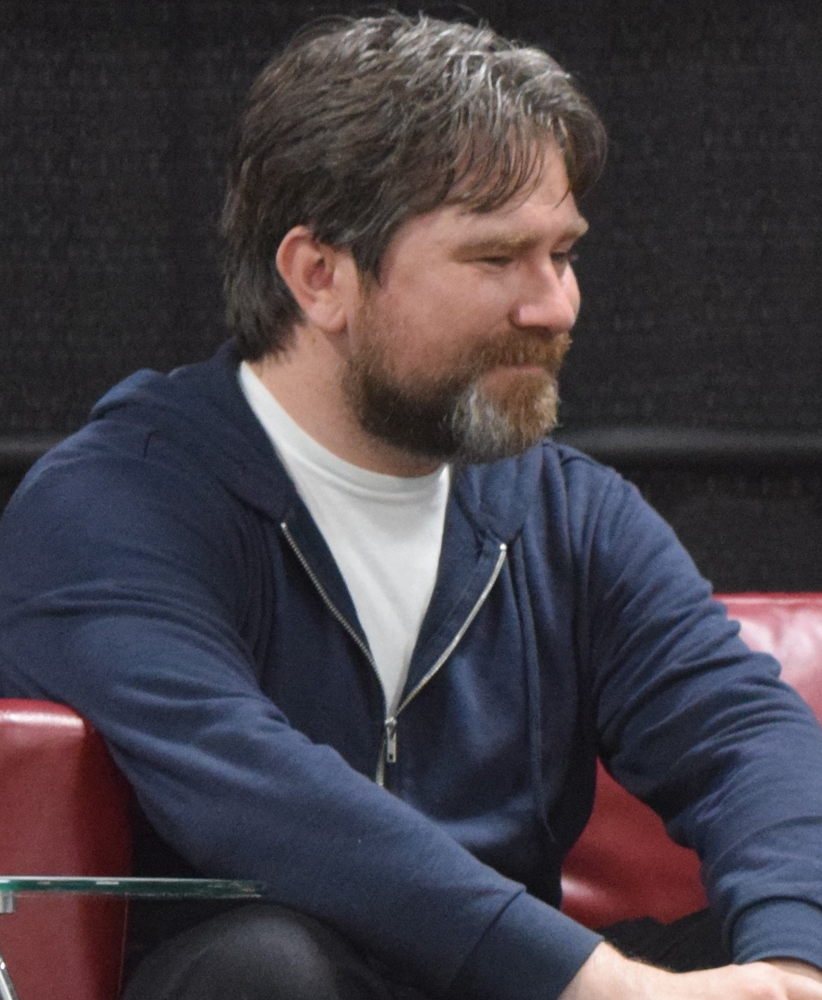

El actor de Arthur Morgan ha hablado sobre Red Dead Redemption 3, y dice que "está seguro de que algún día lo veremos"
Roger Clark asegura también que "tampoco cuentes con la participación de Arthur" porque cree que "su historia ya ha sido contada". Hay mucha gente más entusiasmada por un hipotético Red Dead Redemption 3 que por el próximo gran lanzamiento de Rockstar, GTA VI. Los motivos son los siguientes, Red Dead Redemption 2 dejó el listón muy alto, se alejó de la vertiente arcade de Grand Theft Auto V y porque presentó una narrativa inigualable. Aun así, no es la primera vez que se ha hablado del futuro de la saga Red Dead, pero lo más sensato es pensar que en un futuro podríamos recibirlo.

PlayStation revela el precio de The Last of Us: Parte 2 Remastered y de la Edición WLF
Ya se puede reservar The Last of Us: Parte 2 Remastered por 50 euros, aunque podrás actualizar por 10 euros si ya tenías una copia del título de Naughty Dog Aunque hoy la atención de la mayoría de jugadores haya estado centrada en GTA VI, muchos se han olvidado de que hoy se habilitaban las reservas de The Last of Us: Parte 2 Remastered. La nueva edición de Naughty Dog añadirá numerosos cambios, pero había un aspecto importante que todavía no conocíamos y era el precio. Hoy ya hemos salido de dudas en sus dos ediciones, y a continuación te lo mostraremos todo